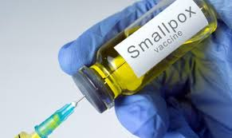

Gejala
 Created by M. Damar Rukmana.
Created by M. Damar Rukmana.
Gejala penyakit cacar biasanya baru muncul 12-14 hari setelah paparan pertama terhadap virus variola. Gejala awal meliputi sejumlah gangguan kesehatan yang menyerupai gejala flu seperti:
Gejala-gejala ini biasanya akan menghilang dalam 2-3 hari. Kemudian kondisi pasien akan membaik.Akan tetapi, 1-2 hari berikutnya gejala paling umum dari penyakit ini mulai muncul.
Gejala tersebut berupa ruam di permukaan kulit yang dalam waktu 1-2 hari akan berubah menjadi lepuhan kecil yang berisi nanah pada, atau disebut juga sebagai lenting.
Mulanya lenting akan muncul di lidah, wajah, dan lengan hingga menyebar ke badan bagian depan dan sekujur tubuh. Lenting yang muncul di lidah atau area mulut juga bisa menyebar ke dalam tenggorokan.
Dalam waktu 8-9 hari lenting kemudian akan mengerak hingga pada akhirnya mengering dan berubah menjadi keropeng beberapa bisa meninggalkan bekas luka.
Seseorang yang terinfeksi cacar dapat menularkan virus ini mulai dari munculnya ruam sampai lenting di kulit mengering dan mengelupas sendiri dalam 2 minggu.
Gejala-gejala dari penyakit cacar secara umum meliputi:.
- Munculnya ruam kulit merah.
- Ruam berubah menjadi lenting (lepuhan bernanah) beberapa hari kemudian.
- Lenting berubah mengerak biasanya terjadi dalam 8-9 hari.
- Keropeng (bagian kering pada luka) terbentuk pada lepuhan dan mengelupas, biasanya dalam minggu ketiga dari kemunculan gejala ruam.
- Terbentuknya bekas luka permanen (bopeng).
- Apabila lenting terbentuk di dekat mata, pasien dapat mengalami kebutaan.
Read more Comments (3) April 26, 2007
Pencegahan
Created by Suryati Dwi
Pencegahan dapat dilakukan dengan:
1. VAKSINASI VARIAK
Vaksinasi Variak adalah vaksin antichickenpox. Menurut para ahli 85% orang yang telah divaksin, tidak akan terkena penyakit ini. 15% lagi tetap terkena cacar air, namun efeknya tidak separah orang yang tidak pernah divaksin.
2. VAKSIN SMALLPOX
Vaksin cacar ini berisi virus yang diolah dan kurang berbahaya, serta sedikit antibiotik, neomisin. Perkembangan vaksin virus diawali dengan penemuan Edward Jenner Pada tahun 1798, bahwa inokulasi cacar sapi (cowpox) pada seseorang ternyata dapat melindungi orang tersebut dari penyakit cacar (smallpox). Sejak saat itu vaksin mengalami perkembangan biak dari cara menentukan epitop imunodomian, strategi perbanyakan protein maupun cara aplikasinya.
a. Bentuk Vaksin Smallpox
Vaksin smallpox merupakan vaksin virus hidup yang dilemahkan, yang terdapat dalam bentuk bubuk kering. Bentuk ini kurang stabil dibandingkan vaksin virus hidup lainnya, sehingga memerlukan suhu penyimpanan tertentu.
b. Dosis Pemberian Vaksin Smallpox
-
Dianjurkan agar satu dosis (0,5 cc) vaksin cacar air diberikan kepada:
- Anak yang berusia 18 bulan kecuali jika pernah menderita infeksi cacar air.
- Anak di kelas 7 Sekolah Menengah, kecuali jika pernah menerima dosis vaksinasi atau menderita infeksi
- Anak remaja (14 tahun keatas) dan Orang dewasa
Read more Comments (3) April 26, 2007
Pengobatan
 Created by Neelam Hawani
Created by Neelam Hawani
Cacar air yang terjadi pada penderita dengan sistem kekebalan tubuh yang baik tidak memerlukan pengobatan khusus. namun, untuk meringankan gejala yang dialami penderita, beberapa upaya berikut dapat diakukan dirumah, yaitu:
- Banyak minum dan mengonsumsi makanan yang lembut dan tidak asin atau asam,terutama jika ruam cacar terdapat pada mulut.
- jangan menggaruk ruam atau luka cacar , karena dapat meningkatkan resiko infeksi. untuk mencegahnya, potong kuku hingga pendek atau kenakan sarung tangan, terutama saat maam hari.
- Kenakan pakaian berbahan lembut dan ringan.
- Mandi dengan air hangat, 3-4 kali sehari, selama beberapa hari setelah timbulnya ruam. setelah itu, keringkan denan cara tepuk-tepuk dengan handuk yang kering.
- Kompres ruam atau luka dengan air dingin unutk meringankan gejala gatal.
selain langkah-langkah tersebut, ada beberapa salep atau obat yang dapat digunakan, seperti Anthistamin (untuk mengurangi rasa gatal), Paracetamol (untuk meredakan demam dan nyeri). Pemberian aspirin pada Penderita cacar tidak dianjurkan karena dapat memicu Penyakit Sindrome Reye. Begitu pula dengan obat Antiinflamasi Nonsteroid, seperti Ibuprofen, yang dapat memicu infeksi sekunder atau kerusakan jaringan. Untuk penderita cacar air yang berisiko mengalami komplikasi, maka obat yang dapat digunakan berupa antiviru, seperti Acyclovir, Valacyclovir, atau Famciclovir. Obat jenis ini tidak menyembuhkan cacar, tapi dapat menghambat aktivitas virus, sehingga gejala yang muncul lebih ringan. Pasca kesembuhan dari cacar air, penderita berisiko mengalami inffeksi dari Varicella Zoster yang menetap di dalam tubuh, yaitu cacar ular atau Herpes Zoster. Setelah sembuh dari cacar airr,virus Varicella Zoster akan menetap didalam sel saraf dan dapat aktif kembali beberapa tahun kemudian dallam bentuk penyakit Herpes Zoster. Kemunculan cacar ular ini dialami oleh orang dewasa yang sudah terkena cacar air, terutama orang dengan sistem kekebalan tubuh yang rendah.
Baca lebih lanjut Komentar(3) 26 April 2007